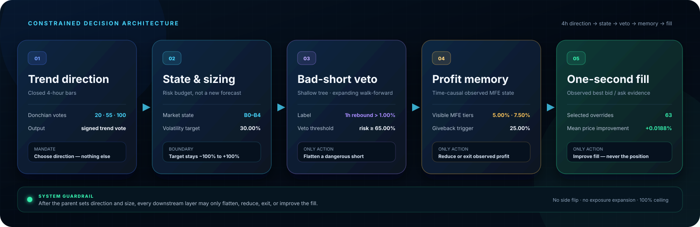

BTC / USDT · 4-hour decisions · 100% exposure ceiling
A trend system built to be asymmetric — by design.
The technical contribution is not a spectacular backtest number. It is a constrained decision system: detect the long–short asymmetry, size through market state, let machine learning veto only dangerous shorts, protect observed profit with a time-causal MFE state machine, then improve a small number of fills with one-second execution data.
The number that matters
Gross is a diagnostic. Net is the claim.
Gross diagnostic
+488.16%
Real-cost primary
+364.31%
Maker fee 0.02%
Taker fee 0.05%
Rebate 0.00%
Primary result cost-aware
Both paths begin with the same capital and use the same decisions. The difference is a cumulative-return comparison, not a standalone fee rate. The net path is the primary result throughout this page.
Interactive decision tape
Read every position decision directly on the market path.
Drag horizontally to move through history. Scroll or pinch to zoom. The lower rail is the signed target position.
UTC timeMove across the chart
BTC close—
Target position—
Decision state—
Events—
Signed target position−100% · 0% · +100%
Four-hour closed bars are shown in UTC. Entry markers identify episode starts; cyan markers identify selected one-second execution overrides; amber markers identify reduce-or-exit actions from the observed-profit state machine.
Real-cost path
The strategy path is compared with BTC buy-and-hold on the same clock.
Cumulative return · move across the chart
Strategy after modeled costs
BTC buy & hold
Strategy drawdown
Historical simulation from 2024-01-01 04:00 to 2026-07-05 16:00 UTC. Primary costs use 0.02% maker and 0.05% taker fees, one-second best bid/ask execution where available, and no rebates. Results are not live performance.
Decision architecture
Every added layer has a narrow mandate.
The system keeps forecasting, risk control and execution separate so that a late-stage module cannot quietly become a new direction model.

Swipe horizontally to inspect each decision layer.
Controlled common-window replay
State and side asymmetry reinforce each other.
All four cells use the same cost-aware sample and starting capital.
2024-01-01 → 2026-06-25 · 5,438 bars
Symmetric sizing
Asymmetric sizing
No market state
State-aware
Closed-episode distribution
Long and short outcomes are not mirror images.
Long
Short
Long median −0.51%
Short median +0.07%
Each side normalized to 100%
The histogram describes realized strategy episodes. It supports asymmetric treatment; it does not identify a universal law of BTC returns.
Descriptive state × asymmetry interaction
+28.81%
This is a difference-in-differences diagnostic on cumulative return. It is not a causal estimate, and module contributions must not be added together.
What each module actually fixed
The strongest contribution is disciplined task allocation.
State-constrained direction
Donchian votes over 20, 55 and 100 bars define direction; volatility-normalized sizing and a B0–B4 state map determine how much risk is allowed.
Without state+222.41%With state+349.14%
Machine learning as a bad-short veto
A shallow decision tree estimates whether an existing short faces a greater than 1% one-hour rebound. At a 65% risk threshold, it may flatten that short — never open a long or increase exposure.
Without veto+304.18%With veto+349.14%
Observed-profit MFE guard
Once visible maximum favorable excursion reaches 5.00%, a 25.00% giveback can reduce exposure. At 7.50%, the same giveback can exit; a 4.00% current-profit guard avoids cutting strong captures too early.
+16.65%cumulative-return difference vs parent-only replay
One-second execution, narrow by design
Confirmed touch events may replace the baseline fill only when observed one-second quotes improve price. The overlay cannot change side or enlarge the parent position.
+0.0188%mean selected price improvement across 63 overrides
Ablation evidence
The parent does most of the work; overlays add targeted value.
C1 real-cost primary · 100% exposure ceiling
Controlled replay window: 2024-01-01 04:00 to 2026-06-25 08:00 UTC. Values are cumulative returns from the same start value after modeled costs. Contributions overlap; the rows are comparisons, not additive causal attribution.
Evidence boundary
What this research does — and does not — establish.
Sequential historical simulation
The displayed paths come from a frozen, cost-aware replay over closed four-hour bars with one-second quote checks for selected executions.
Historical fill improvement is not live parity
The one-second overlay is evidence from historical replay. Online timing and queue behavior require separate forward validation before any live-performance claim.
Diagnostics are not causal proof
Ablations support the stated mechanisms under the frozen experiment. They do not prove universal causality, and an unstable standalone bull-capture subrule is not claimed as independent alpha.
Research takeaway
Give the trend model direction. Give the state layer risk. Give machine learning one veto. Give the profit guard memory. Give execution only the fill.